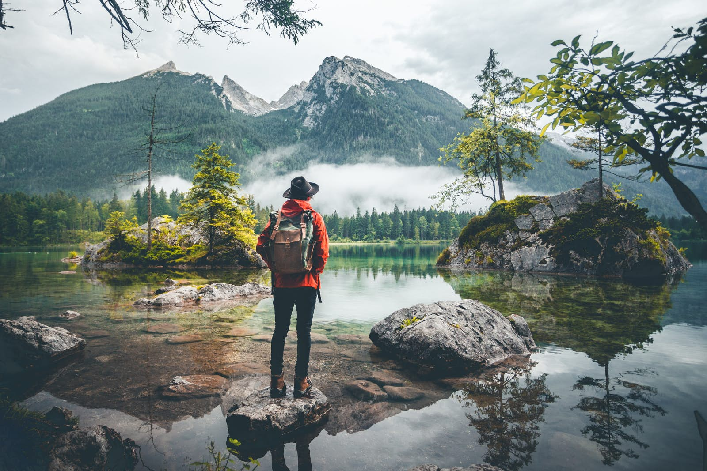

Music
(Author:moves media)
Music is loved and enjoyed by all people around the world in different ways. Its pleasant sound makes it an important element in a person’s life. Hearing music makes I feel peaceful and happier in life. Without the harmony and melody of music, life becomes very frustrating. I liked any types of music like, Jazz Music, Hip hop Music, Rock and Roll Music, Rock Music, Folk music, soft music, etc. Beside listening music, I love to sing the song as well. I sing Nepalese and Indian songs whenever there are community programs.
Reading
(Author: opensource.com)
Reading is one of the most important and beneficial activities. Reading is the kind of exercise that keeps my mind engaged, active and healthy. It is important to develop the habit of reading not only for the sake of knowledge but also for personal growth and development. It develops positive thinking one me and gives me a better perspective of life. Reading enhances my knowledge, improves my concentration and makes debate and me more confident ready. The more I read the more wise I become and the more I will be recognized and appreciated. I reads books and magazines whenever and wherever I have free time. I have selective books and magazines that I actually enjoy reading. I feel relax after reading, I simply grab a good book and find a quiet location. Spending a few hours getting lost in a novel or reading about favorite he forget everything around me – work, school, all the bad news in the world.
Travelling

(Author: lonely plannet)
Travelling plays an important part in making me feel relaxed and rejuvenated. It also brings positive changes in our life and keeps us alive and active. Travelling gives me practical experience of things I have studied in the books and surfed on the internet. Nowadays, many people like travelling as they want to explore the world and watch everything they have read about. And this seems to be quite justified as practical knowledge is way more essential and effective than the theoretical one. People like to visit historical places present in different parts of the world and gather information on the same to write books and stories. In my opinion, travelling teaches to trade and commerce, language, sociology, customs, culture, history, geography and so on. So the educational value of traveling beggars description. I liked to travel historical places, I like travelling some adventurous places like hiking, kayaking, rafting, etc.